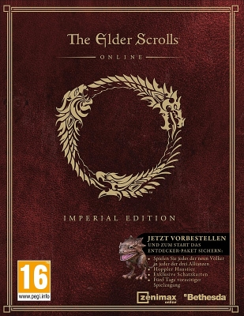

Всем привет. Сегодня, я вас познакомлю с интересным трейлером от "The Elder Scrolls". Совершенно случайно забрёл на сайт elderscrollsonline.su и нашёл там крутой ролик. Надеюсь, игра будет на уровне. Смотрим и наслаждаемся.
Действие многопользовательской ролевой игры «The Elder Scrolls Online» будет происходить задолго до событий предыдущих частей серии — во времена второй эры. Об этой тёмной эпохе, в течение которой весь Тамриэль был охвачен пламенем войны, известно немногое.
Империя ослаблена многочисленными конфликтами с другими провинциями и едва способна защитить собственные границы. В попытке вернуть континент под власть императора, благородная семья Тарнов заключает союз с печально известным некромантом Маннимарко. Король Червей соглашается возвращать к жизни погибших легионеров, поддерживая боеспособность имперского войска.
Однако, втайне от всех, коварный некромант служит другому господину — принцу даэдра Молаг Балу, намеревающемуся завоевать царство смертных и сделать его частью своего демонического измерения.
Игрокам предстоит вернуть свои бессмертные души, похищенные Маннимарко и разрушить планы короля насилия Молаг Бала, отправив его назад в Обливион.
Всё самое интересное о The Elder Scrolls Online, подробнее — смотрите на elderscrollsonline.su →
“Видео”
Два супер трейлера от The Elder Scrolls Online. Просто Круть.